EA FC 24
The post-FIFA era of digital football, with HyperMotionV and PlayStyles.
Review
EA FC 24 marked the first installment of the post-FIFA era following EA Sports' split from the governing body, and the transition was smoother than many feared. HyperMotionV — an enhanced motion capture technology — produces noticeably improved player animations, with dribbling, first touches, and physical battles looking and feeling more authentic than before. The introduction of PlayStyles, a system that gives elite players unique mechanical traits reflecting their real-world abilities, adds a layer of tactical depth to Ultimate Team and Career Mode.
Career Mode received meaningful improvements: the ability to manage a club from the youth team up, tactical presets that persist across matches, and improved press conference dialogue give it more of the management simulation depth longtime fans have demanded. The return of women's football integration — combining men's and women's clubs in Clubs mode — is an overdue and welcome addition.
The persistent issues are well-documented. Ultimate Team remains one of the most aggressive loot box economies in mainstream gaming, and the pressure to spend real money to remain competitive on the ranked ladder is genuine. Gameplay servers are inconsistent, and the 'scripted' feel of certain matches — late equalisers, momentum shifts — continues to frustrate. At its best, EA FC 24 plays a fluid, spectacular football simulation; at its worst, it's an exercise in managed frustration.
Strengths and Limits
- HyperMotionV animations represent a genuine step forward in fidelity
- PlayStyles give elite players mechanical distinction
- Career Mode received more meaningful updates than recent years
- Women's football integration in Clubs mode is excellent
- Best licensed football game on the market
- Ultimate Team monetization remains aggressive and ethically questionable
- Gameplay server quality is inconsistent — desync is a persistent problem
- AI difficulty scaling can feel artificially 'scripted'
- Incremental annual improvements don't justify full price
Reader Fit
This review is written around fit: who should play it, what kind of session it rewards, and what friction might make it wrong for another reader. A high grade does not mean every player should buy it immediately. It means the game has a clear identity, a strong reason to exist, and enough craft to justify attention from the right audience.